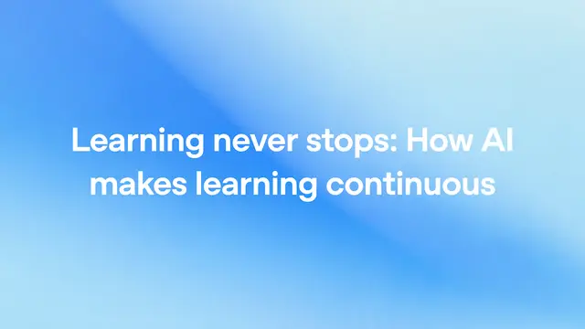

OpenAI / 研究・モデル更新
ChatGPTが「授業外の学習」を変える、OpenAIが示した継続学習の実態

OpenAIは2026年8月26日、学生や教育者によるChatGPTの利用実態をまとめた新たな報告を公表しました。中心にあるのは、AIによって質問、反復練習、フィードバックを必要な瞬間に受けられる「継続学習」という考え方です。従来、教室や教師の時間に依存していた学習支援が、時間と場所を越えて提供され始めています。
QUICK READ
この記事の要点
週7000万件、知識確認に使われるChatGPT
OpenAIがプライバシーに配慮して実施した分析では、全年齢層を通じて、自分の理解度を試す目的のChatGPTとの会話が週最大7000万件に達するとしています。ここには、誤解している点の確認や追加問題を求める利用などが含まれます。 米国では、授業や宿題に関連するプロンプトが学校年度中に週4億6000万件を超えるピークを記録し、特に日曜夜に増える傾向が確認されています。夏休み中でも週1億8000万件以上を維持しており、AIが学校の時間割とは独立した学習インフラになりつつある状況が示されています。
AIの価値は「答え」より即時フィードバック
技術的に重要なのは、生成AIが単なる検索手段ではなく、対話を繰り返しながら学習内容を調整できる点です。 学生であれば、授業直後に代数の理解できなかった部分を質問し、追加練習へ進めます。教師は、同じ課題を異なる習熟度に合わせて調整したり、繰り返し発生する事務作業を効率化したりできます。また、家庭で学校とは異なる言語を使う場合には、学校からの連絡を理解しやすい言語へ変換する用途も想定されています。 これは、一斉授業を中心とする教育に「オンデマンド型の補助レイヤー」を追加する変化と捉えられます。
教師を置き換える技術ではない
一方、OpenAIはAIが教師の判断、保護者による励まし、そして学生自身が学ぶ努力を代替できるものではないと明確にしています。 生成AIには誤った回答を出す可能性があり、学習者が答えだけを取得すれば、思考過程そのものを省略するリスクもあります。そのため教育現場では、AIを回答生成装置として使うのではなく、ヒント、質問、理解度確認、反復練習などを提供する補助者として設計することが重要になります。
Discord掲載記事からの抜粋です。詳細・文脈は全文と出典をご確認ください。
出典・参考リンク
日付はAFNJPへの掲載日です。発表元の公開日とは異なる場合があります。